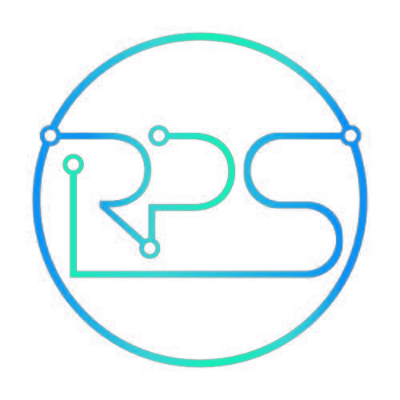

Pillars run 1 to 6 clockwise from the top, ordered by what a customer is most likely to take first. The geometry and icons are the demo website's, unchanged; only the order and colours move.
Colours follow the service, not the number, so the tokens are named by service and a future reorder is a markup change, not a palette change. The six colours are the same as before, rearranged so no two neighbours merge for red–green colour-blind viewers. No six-colour set survives colour blindness intact, which is why every pillar also carries its number, name and icon. Use the buttons to check.
All six live. System Health & Reporting carries “Inspections” so the thing most people come for is named on the ring.
Pillar 1 active, the only one the portal delivers today. The rest subdued with a lock and “Not included”. No service count until entitlement data exists.
| No. | Pillar | Colour | Token |
|---|---|---|---|
| 1 | System Health & Reporting | Mint #00EBB4 | --rps-pillar-health |
| 2 | Spares, Repairs & Maintenance | Magenta #D46BD9 | --rps-pillar-spares |
| 3 | Training & Knowledge | Steel #9DB4D0 | --rps-pillar-training |
| 4 | Lifecycle Management | Violet #8B7CF6 | --rps-pillar-lifecycle |
| 5 | Triage Intelligence | Cyan #00BEEB | --rps-pillar-triage |
| 6 | Engineer Access | Blue #008CF5 | --rps-pillar-engineer |
Contrast ratios are against the shell background unless noted. AA needs 4.5:1 for body text and 3:1 for large text and graphics.
--rps-shell#070D17Page background.
--rps-panel#0D1726Cards and tables.
--rps-panel-raised#111E31Hover and nested panels.
--rps-text#EDF3FA · 17.4:1Body text.
--rps-text-muted#93A4BC · 7.7:1Labels. 6.6:1 on raised panels, so safe at small sizes.
--rps-action#008CF5 · 5.6:1Links, focus, active navigation.
--rps-action-fill#0072CE · white 4.9:1White on #008CF5 is only 3.5:1, so filled buttons sit one step darker. Agreed.
--rps-cta-public#FFA13BWebsite only. Too close to caution amber to share a screen with it.
Every status carries an icon and a word. Passed is quiet: text colour and a tick. Colour is spent on what needs attention.
The pill-shaped amber button is the website's. It does not appear in the portal or Hub.
This panel has no live feed. Open Inspections to see overdue and failed equipment, or Triage for open cases.
An empty panel must never read as “nothing is urgent”.
| Equipment | SWL | Status |
|---|---|---|
| Flying bar 12 | 500 kg | Passed |
| Stage lift C chain | 2,000 kg | Failed |
| Performer flying winch | 250 kg | Not presented |
| Revolve drive | — | Not yet examined |
Illustrative rows. Figures in IBM Plex Mono.
Roboto for all text. IBM Plex Mono for figures, codes and small labels.
--rps-size-2xl · 700Kept show-ready--rps-size-xl · 700System Health & Reporting--rps-size-lg · 500Riverside Theatre--rps-size-base · 400We inspect, monitor and audit system health, identify risks early and report clearly.--rps-size-sm · mutedLast examined 14 May 2026 by a named engineermono · --rps-size-smSWL 2,000 kg · next due 14 Nov 2026